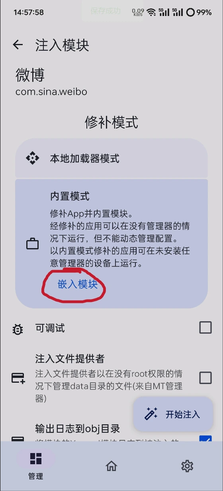

LSPatch 用了一年半：从"终于不用解锁 BL"到"它替我挡了多少麻烦"
从 Android 12 用到 Android 14，LSPatch 陪我走过了两台手机的换用周期。这篇不讲原理不讲教程，只聊一年半里它让我省了多少事，又在什么地方让我皱过眉。
当初为什么装它
说出来不光彩——我装 LSPatch 的契机是换了一台国行小米，BL 锁得死死的，连开发者选项里的 OEM 解锁开关都被阉割了。之前用了五年 LSPosed，习惯了给微博去广告、给 B 站加下载按钮、给微信换字体。新机到手两天就受不了原生应用的各种限制，搜了一圈发现免 Root 的路线里，LSPatch 是社区最活跃的一个——去它的官网看了一圈，文档维护、社区讨论、后续分支都在活跃更新。
说白了就是「不想解锁 BL、不想丢保修、还想继续用那几个 Xposed 模块」。没什么崇高动机，就是一个老用户不想回到被应用摆布的状态。
越用越顺手的地方：原来修补是个"纯文件操作"
LSPatch 刚上手的时候我总觉得它应该很复杂——要改 Manifest、要注入 so、要重签名，听起来每一步都可能把 APK 搞坏。实际跑了三五次之后才发现，修补这个动作本身是纯文件操作，它在本地产出一个新的 APK，不碰手机上已经装的应用。
这个认知一旦建立，整个流程就变得轻松了。之前用 LSPosed 的时候，改完模块配置点重启 Zygisk，每次都像在赌——能不能起来、起来之后模块有没有生效、系统会不会卡一分钟。LSPatch 没有这个焦虑：修补失败了，手机上的原版应用好好的，删掉修补产物重来就行。

最顺手的是选应用来源这一步。Manager 的「应用管理」Tab 里点那个 + 号，直接从已装应用列表选就行，LSPatch 自己从系统目录里把原始 APK 抓出来。省了我找 APK 提取器，实在要手动找的话从官方下载拿也能顺便确认版本，不用担心下到二次打包的黑产包。唯一的小纠结是分包应用——有些应用有 split APK，从已装应用选的时候 LSPatch 会一起打包，这个细节我是第三次修补一个大型应用才发现的。
越用越烦的地方：签名不匹配这道坎
这是 LSPatch 路线绕不过去的硬伤——修补完的 APK 改了签名，Android 系统不允许同包名不同签名的 APK 覆盖安装。所以每次更新应用版本，流程都是：等原版出新版 → 下新版 APK → 卸载手机上的修补版 → 装新版修补版 → 重新配置模块作用域。
这个流程我跑了一年半，还是觉得烦。尤其应用商店还在不停弹「有新版本可用」的通知，因为它看到修补版的签名跟它记录的不一致，认定这是个旧版本。手动忽略一次两次还行，持续弹通知确实闹心。
还有一个让我皱过眉的点是厂商系统的后台策略。MIUI 杀后台严重，LSPatch 的 Manager 在本地模式下经常被系统杀掉，每次开机要手动拉一次。OPPO 的 ColorOS 更激进，我给朋友分享过一个便携包，他那边 Manager 保活要额外加白名单。三星相对宽松，这也是我后来换三星的原因之一——不是因为 LSPatch 要求，是它让 LSPatch 这条路线少了很多摩擦。
成了每天离不开的：便携模式
便携模式是我用 LSPatch 用得最香的功能——不是我自己用，是给朋友发定制包。
之前想给一个用 iPhone 的朋友安利 Android，给他装了 LSPatch 修补好的微博去广告版，他拿到手卸载原版、装修补版、直接用。零额外操作，不需要装 Manager、不需要配 Shizuku、不需要管什么 Xposed 模块。他甚至不知道这中间有个叫 LSPatch 的工具存在。
后来又给他补了 B 站下载包、给另外两个手机玩家朋友发了各自的定制版应用。每次都是一样的流程：我这边修补 → 验证模块生效 → 发 APK → 他们那边直接装。

这里有个反直觉的发现：原版 LSPatch 已经停更了，社区分支 opatch 和 onpatch 在持续维护。我给朋友分享之前会用 opatch 再修补一次——不是说原版不稳定，是 opatch 对 Android 14/15 的兼容性更好，而且万一出问题社区还在修。后来去 LSPatch文档 翻了一下 opatch 的适配说明才敢这么干，原版停更这件事我当初是有点焦虑的，但实际用下来发现，LSPatch 的核心功能已经成熟到不怎么需要更新了，修补流程的 API 几年没变过，社区分支主要是追新 Android 版本适配。
碰都没再碰的：LSPatch Manager
说实话，LSPatch Manager 这个应用我现在很少打开了。便携模式的修补包是一次性的，嵌死了模块，签名也签好了，发给朋友之后他们根本不需要 Manager。我自己手机上留 Manager 主要是偶尔想加个新模块试试——大部分时候修补完 APK 就不管它了。
本地模式我用得更少了。当初试过一阵，但 Shizuku 无线调试的权限管理在某些厂商系统上挺折腾，而且本地模式的修补 APK 依赖 Manager 后台，Manager 被杀了模块就不生效。便携模式虽然不能动态切换模块，但胜在稳定，装完就跟普通应用一样跑，不依赖任何后台服务。
观感修正：当初的判断哪里错了
我最初装 LSPatch 时的想法很简单——这是 LSPosed 的替代品，用来解决不想解锁 BL 的问题。一年半下来这个判断变了。
LSPatch 不是 LSPosed 的降级版，它是一条完全不同的路线。LSPosed 是系统级 hook，修改的是系统进程，能改状态栏、能改系统设置、能做系统级模块。LSPatch 是应用级 hook，它只能修改单个 APK，系统级的事一件也做不了。当初我以为 LSPatch 能覆盖 LSPosed 80% 的使用场景，现在看来这个比例可能只有 30%——但那 30% 是我每天真正用到的部分，剩下 70% 我其实一直没怎么用。
当初低估了签名不匹配带来的连锁反应——应用商店更新拒绝安装、跨应用调用可能被微信拦截、修补版永远不能自动更新。这些问题在日常使用中持续制造摩擦，只是我习惯了就不觉得了。
当初高估了 LSPatch 社区的活跃度——原版停更后主要靠社区分支撑着，opatch 和 onpatch 的维护节奏远不如 LSPosed 官方。好在核心功能稳定，追 Android 新版本适配才是社区分支存在的主要意义，日常使用不太受影响。
去留结论：暂时不换，但有信号会考虑
LSPatch 我暂时不打算换。理由很简单：BL 还是锁着、保修还是要保、日常用的那几个模块它都能兜住。换 LSPosed 需要解锁 BL，解锁之后能不能回去是个问题，而且国行机型解锁流程本身就够折腾。
什么信号出现我会考虑换？两个：一是我想装系统级模块的时候——比如修改状态栏、比如全局手势、比如安全设置层面的东西，这些 LSPatch 做不了；二是 LSPatch 核心依赖出问题的时候——比如 Apkzlib 停止维护、比如 Android 下一个大版本有根本性变化，而社区分支没跟上。
还有一种可能：如果哪天 Android 的沙盒策略进一步收紧，应用级的 hook 也被堵死了，那不管 LSPatch 还是 LSPosed 都得一起让路。但从目前的 Android 15 来看，这种短期不会发生——opatch 和 onpatch 都已经适配了，修补流程本身没遇到硬性阻碍。
一点题外话
写这篇的时候翻了翻当初的下载记录，我第一次下载 LSPatch 是 2024 年 3 月，用的还是 opatch 早期版本。一年半过去，手机从 Android 12 升到 Android 14，换了一台设备，修补过的应用加起来有二十来个。没出过大问题，没刷过机，没丢过数据。
这种稳定感是我对 LSPatch 最实在的评价——它不是最酷的方案，不是功能最全的方案，甚至不是最优雅的方案。但在「不想解锁 BL、不想丢保修、还想用 Xposed 模块」这个细分需求里，它是目前能用、够用、社区还在的唯一解。
资料维护上我同步到了三个仓库：GitHub 上有完整备份，Gitee 方便国内用户，GitCode 留作镜像，LSPatch 这条路线本身就是社区产物，资料也该保持开放。